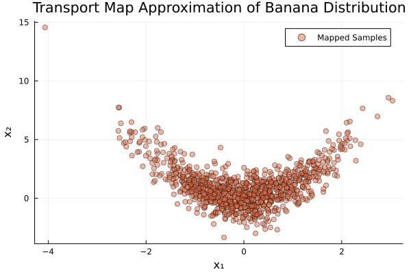

Banana: Map from Density
This example demonstrates how to use TransportMaps.jl to approximate a "banana" distribution using polynomial transport maps.
The banana distribution is a common test case in transport map literature [1], defined as a standard normal in the first dimension and a normal distribution centered at $x_1^2$ in the second dimension. This example showcases the effectiveness of triangular transport maps for capturing nonlinear dependencies [3].
We start with the necessary packages:
using TransportMaps
using Distributions
using PlotsCreating the Transport Map
We start by creating a 2-dimensional polynomial transport map with degree 2 and a Softplus rectifier function.
M = PolynomialMap(2, 2, Normal(), Softplus())PolynomialMap:
Dimensions: 2
Total coefficients: 9
Reference density: Distributions.Normal{Float64}(μ=0.0, σ=1.0)
Maximum degree: 2
Basis: LinearizedHermiteBasis
Rectifier: Softplus
Components:
Component 1: 3 basis functions
Component 2: 6 basis functions
Coefficients: min=0.0, max=0.0, mean=0.0
Setting up Quadrature
For optimization, we need to specify quadrature weights. Here we use a sparse Smolyak grid with level 2:
quadrature = SparseSmolyakWeights(2, 2)SparseSmolyakWeights:
Number of points: 17
Dimensions: 2
Quadrature type: Sparse Smolyak (Gauss-Hermite)
Reference measure: Standard Gaussian
Weight range: [-0.05555555555555575, 0.22207592200561244]
Defining the Target Density
The banana distribution has the density:
\[p(x) = \phi(x_1) \cdot \phi(x_2 - x_1^2)\]
where $\phi$ is the standard normal PDF.
We pass the logpdf as an input for the map construction
target_density(x) = logpdf(Normal(), x[1]) + logpdf(Normal(), x[2] - x[1]^2)Create a MapTargetDensity object for optimization
target = MapTargetDensity(target_density)MapTargetDensity(backend=ADTypes.AutoForwardDiff())Optimizing the Map
Now we optimize the map coefficients to approximate the target density:
res = optimize!(M, target, quadrature)
println("Optimization result: ", res)Optimization result: * Status: success
* Candidate solution
Final objective value: 2.838246e+00
* Found with
Algorithm: L-BFGS
* Convergence measures
|x - x'| = 9.72e-08 ≰ 0.0e+00
|x - x'|/|x'| = 3.89e-08 ≰ 0.0e+00
|f(x) - f(x')| = 6.79e-14 ≰ 0.0e+00
|f(x) - f(x')|/|f(x')| = 2.39e-14 ≰ 0.0e+00
|g(x)| = 3.78e-09 ≤ 1.0e-08
* Work counters
Seconds run: 0 (vs limit Inf)
Iterations: 12
f(x) calls: 43
∇f(x) calls: 43
∇f(x)ᵀv calls: 0Testing the Map
Let's generate some samples from the standard normal distribution and map them through our optimized transport map:
samples_z = randn(1000, 2)1000×2 Matrix{Float64}:
0.808288 1.29539
-1.12207 -0.0401347
-1.10464 0.875608
-0.416993 0.585995
0.287588 -0.927587
0.229819 -0.414203
-0.421769 -0.0856216
-1.35559 -0.570313
0.0694591 -0.242781
-0.117323 -3.05756
⋮
-0.905438 -1.73076
1.84802 0.432257
-1.29846 0.183927
0.596723 1.55975
0.431956 1.60559
-0.797097 0.723346
-0.0625319 0.474741
-1.25053 -0.0100866
-0.34637 -1.01294Map the samples through our transport map:
mapped_samples = evaluate(M, samples_z)1000×2 Matrix{Float64}:
0.807692 1.94553
-1.12124 1.23059
-1.10382 2.10579
-0.416685 0.747995
0.287376 -0.859308
0.229649 -0.375657
-0.421458 0.0808561
-1.35459 1.29096
0.0694079 -0.253121
-0.117236 -3.06889
⋮
-0.90477 -0.912105
1.84665 3.90491
-1.2975 1.89067
0.596282 1.90543
0.431637 1.77799
-0.796509 1.35647
-0.0624858 0.463276
-1.24961 1.57193
-0.346115 -0.906788Visualizing Results
Let's create a scatter plot of the mapped samples to see how well our transport map approximates the banana distribution:
scatter(mapped_samples[:, 1], mapped_samples[:, 2],
label="Mapped Samples", alpha=0.5, color=2,
title="Transport Map Approximation of Banana Distribution",
xlabel="x₁", ylabel="x₂")
Quality Assessment
We can assess the quality of our approximation using the variance diagnostic:
var_diag = variance_diagnostic(M, target, samples_z)
println("Variance Diagnostic: ", var_diag)Variance Diagnostic: 0.00038329381523255924Interpretation
The variance diagnostic provides a measure of how well the transport map approximates the target distribution. Lower values indicate better approximation.
The scatter plot should show the characteristic "banana" shape, with samples curved according to the relationship $x_2 \propto x_1^2$.
Further Experiments
You can experiment with:
- Different polynomial degrees (see [3] for monotone map theory)
- Different rectifier functions (
IdentityRectifier(),ShiftedELU()) - Different quadrature methods (
MonteCarloWeights,LatinHypercubeWeights,GaussHermiteWeights) - More quadrature points for higher accuracy
This page was generated using Literate.jl.